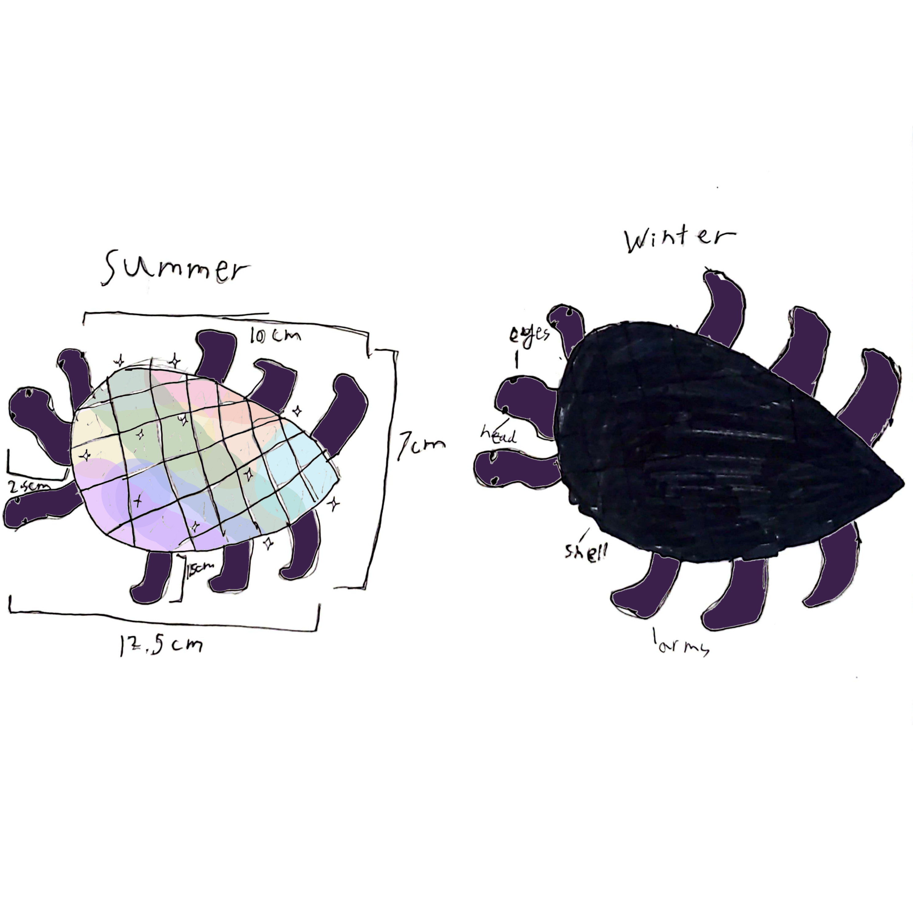

Duotinctus ëurandia: "Two-Toned Beatle"
(No images can legally be recorded on the surface of Crystallis for non-scientific purposes, so only sketches may be shown.)

Duotinctus ëurandia, also known as the "Two-Toned Beatle," is a herbivore species native to the Troptical region of Ëurand, often compared to the Earth turtle or beatle. During the summer, its hard shell becomes reflective, allowing it to handle the extreme 24-hour tropical daylight, and by winter, it becomes black and opaque to try and absorb as much light as possible. This creature evolved out of necesity. They originally lived closer to the equator, out of the troptics. They still made the summer-winter switch, but it was much less extreme, but their continent moved northward, and they needed to adapt. There were also new aerial predators that showed up, so they made their summer form look like crystalline rocks found on the surface, and made themselves more black in the winter to disguise themselves. During the winter, they often sleep in insulated caves more, and they even learned to create fire by bashing rocks together. They produce asexually, but still scramble their genes in the way we do, just with only one creature involved.